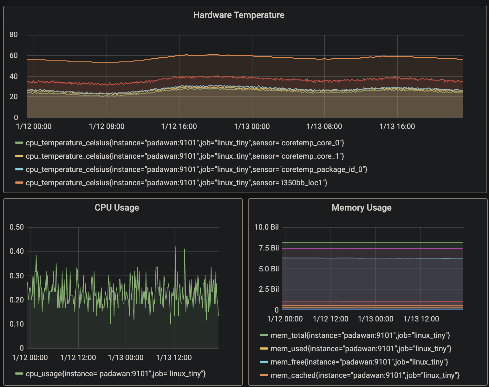
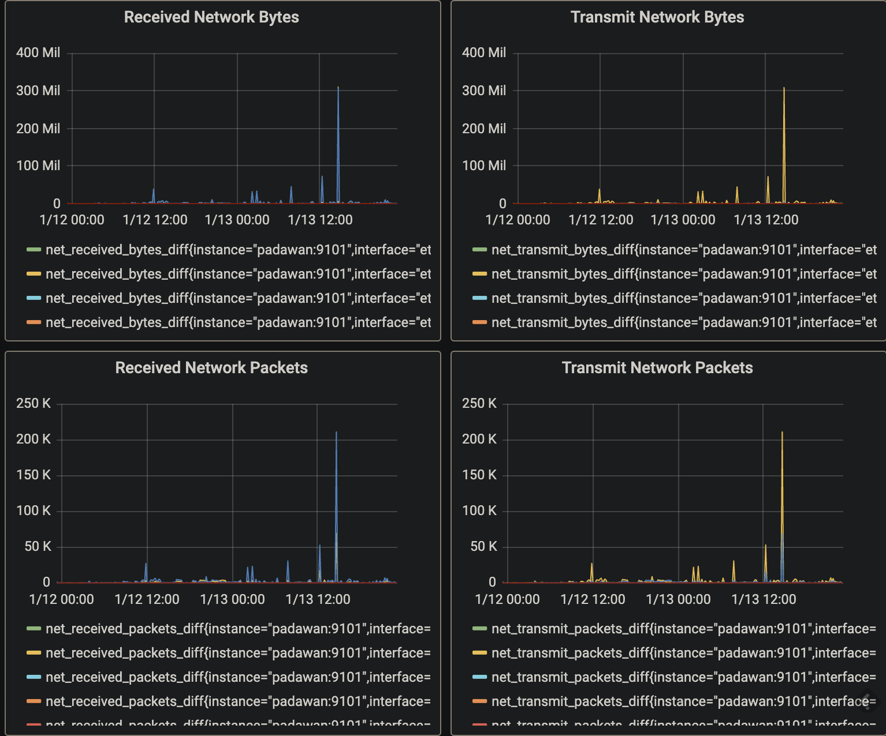

こんにちは @jedipunkz です。
自宅のルータについても可観測性を向上して普段の運用に役立てています。例えば長期スパンでのネットワーク通信料の推移や CPU, Mem 使用率、あとハードウェアの温度の推移などを観測しています。
今までは Prometheus の Node Exporter を使ってホストの情報を Prometheus Server に提供していたのですが、自分で Go で Prometheus Exporter を書いて運用するにようになったので、それについてまとめます。
Grafana の可視化情報
下記が可視化された情報です。CPU, Mem やネットワーク送信量、またハードウェアの温度を可視化して運用しています。
 
ソース置き場
結論になりますが下記にソースを置いています。
https://github.com/jedipunkz/linux-tiny-exporter
ネットワーク送信・受信メトリクスを説明
実際にはこのコードでは CPU 使用率, Memory 使用率, Disk IO, Network トラヒック, ハードウェア温度を取得・提供しているのですが、ここでは例としてネットワークトラヒックに関するメトリクスを Prometheus Server に提供するコードを説明しようと思います。
パッケージのインポート
Prometheus のクライアントライブラリから2つのパッケージをインポートしています。
“github.com/prometheus/client_golang/prometheus”: これは Prometheus の基本的なクライアントライブラリで、メトリクスを定義、収集、エクスポートするための機能を提供します。
“github.com/prometheus/client_golang/prometheus/promhttp”: これは Prometheus の HTTP サーバーとクライアントのためのライブラリで、HTTP 経由でメトリクスを公開するためのハンドラを提供します。
"github.com/prometheus/client_golang/prometheus"
"github.com/prometheus/client_golang/prometheus/promhttp"
ネットワークトラヒックに関する構造体定義
ここからは Internal Packege のコード解説です。
NetCollector という構造体が定義しています。この構造体は、ネットワークインターフェースごとの受信バイト数、送信バイト数、受信パケット数、送信パケット数の差分を保持します。~Diff はそれぞれの値の差分を保持します。前回のスクレイプ（データ収集）からの変化を表します。
type NetCollector struct {
receivedBytesDiff *prometheus.Desc
transmitBytesDiff *prometheus.Desc
receivedPacketsDiff *prometheus.Desc
transmitPacketsDiff *prometheus.Desc
lastReceivedBytes map[string]float64
lastTransmitBytes map[string]float64
lastReceivedPackets map[string]float64
lastTransmitPackets map[string]float64
}
コンストラクタ
NewNetCollector 関数は、新しい NetCollector インスタンスを作成します。この関数では、各メトリクスの差分を表す prometheus.Desc オブジェクトを作成し、それらを NetCollector 構造体の対応するフィールドに設定します。また、前回のスクレイプ時の各メトリクスの値を保持するマップも作成します。
func NewNetCollector() *NetCollector {
return &NetCollector{
receivedBytesDiff: prometheus.NewDesc("net_received_bytes_diff",
"Received bytes by network interface since the last scrape.",
[]string{"interface"}, nil,
),
transmitBytesDiff: prometheus.NewDesc("net_transmit_bytes_diff",
"Transmitted bytes by network interface since the last scrape.",
[]string{"interface"}, nil,
),
receivedPacketsDiff: prometheus.NewDesc("net_received_packets_diff",
"Received packets by network interface since the last scrape.",
[]string{"interface"}, nil,
),
transmitPacketsDiff: prometheus.NewDesc("net_transmit_packets_diff",
"Transmitted packets by network interface since the last scrape.",
[]string{"interface"}, nil,
),
lastReceivedBytes: make(map[string]float64),
lastTransmitBytes: make(map[string]float64),
lastReceivedPackets: make(map[string]float64),
lastTransmitPackets: make(map[string]float64),
}
}
メトリクスを Prometheus に通知する関数
Describe メソッドは、エクスポーターが提供するメトリクスのメタデータを Prometheus に通知するためのものです。このメソッドは、メトリクスの Desc を受け取るチャネルを引数に取ります。エクスポーターは、このチャネルに対して自身が提供するすべてのメトリクスの Desc を送信します。
func (collector *NetCollector) Describe(ch chan<- *prometheus.Desc) {
ch <- collector.receivedBytesDiff
ch <- collector.transmitBytesDiff
ch <- collector.receivedPacketsDiff
ch <- collector.transmitPacketsDiff
}
メトリクス収集関数
Collect メソッドは、Prometheus がメトリクスを収集する際に呼び出されます。このメソッドは、メトリクスの値を受け取るチャネルを引数に取ります。エクスポーターは、このチャネルに対して自身が提供するすべてのメトリクスの値を送信します。
この Collect メソッドでは、次の処理が行われています：
- getNetDevice 関数を呼び出してネットワークデバイスの情報を取得します。
- 取得したデータを行ごとに分割し各行をループ
- 各フィールドからネットワークインターフェースの名前と、受信バイト数、送信バイト数、受信パケット数、送信パケット数を取得します。
- 前回のスクレイプ時の各メトリクスの値と比較して差分を計算し、それを Prometheus のメトリクスとしてチャネルに送信します。
- 最後に、今回のスクレイプ時の各メトリクスの値を保存します。これは次回のスクレイプ時に前回の値として使用されます。
func (collector *NetCollector) Collect(ch chan<- prometheus.Metric) {
data, err := getNetDevice()
if err != nil {
return
}
lines := strings.Split(data, "\n")
for i, line := range lines {
if i < 2 {
continue
}
fields := strings.Fields(line)
if len(fields) < 10 {
continue
}
interfaceName := strings.Trim(fields[0], ":")
receivedBytes, _ := strconv.ParseFloat(fields[1], 64)
transmitBytes, _ := strconv.ParseFloat(fields[9], 64)
receivedPackets, _ := strconv.ParseFloat(fields[2], 64)
transmitPackets, _ := strconv.ParseFloat(fields[10], 64)
if lastReceivedBytes, ok := collector.lastReceivedBytes[interfaceName]; ok {
receivedBytesDiff := receivedBytes - lastReceivedBytes
ch <- prometheus.MustNewConstMetric(collector.receivedBytesDiff, prometheus.
GaugeValue, receivedBytesDiff, interfaceName)
}
if lastTransmitBytes, ok := collector.lastTransmitBytes[interfaceName]; ok {
transmitBytesDiff := transmitBytes - lastTransmitBytes
ch <- prometheus.MustNewConstMetric(collector.transmitBytesDiff, prometheus.
GaugeValue, transmitBytesDiff, interfaceName)
}
if lastReceivedPackets, ok := collector.lastReceivedPackets[interfaceName]; ok {
receivedPacketsDiff := receivedPackets - lastReceivedPackets
ch <- prometheus.MustNewConstMetric(collector.receivedPacketsDiff, prometheu
s.GaugeValue, receivedPacketsDiff, interfaceName)
}
if lastTransmitPackets, ok := collector.lastTransmitPackets[interfaceName]; ok {
transmitPacketsDiff := transmitPackets - lastTransmitPackets
ch <- prometheus.MustNewConstMetric(collector.transmitPacketsDiff, prometheu
s.GaugeValue, transmitPacketsDiff, interfaceName)
}
collector.lastReceivedBytes[interfaceName] = receivedBytes
collector.lastTransmitBytes[interfaceName] = transmitBytes
collector.lastReceivedPackets[interfaceName] = receivedPackets
collector.lastTransmitPackets[interfaceName] = transmitPackets
}
}
デバイス情報取得関数
最後は getNetDevice 関数は Collect 関数で利用されている Linuxシステムの/proc/net/devファイルを読み込み、その内容を文字列として返すものです。
/proc/net/dev ファイルは、システムのネットワークインターフェースに関する情報を提供します。各行は、一つのネットワークインターフェースに対応し、そのインターフェースの受信バイト数、送信バイト数、受信パケット数、送信パケット数などの情報を含みます。
func getNetDevice() (string, error) {
file, err := os.Open("/proc/net/dev")
if err != nil {
return "", err
}
defer file.Close()
var sb strings.Builder
_, err = io.Copy(&sb, file)
if err != nil {
return "", err
}
return sb.String(), nil
}
まとめ
高機能な Node Exporter を使えばその他の情報も細やかに取得・提供出来るのですが、自前で開発した Exporter を使って運用するところに趣があるように思っています。Go であれば Prometheus Exporter の開発は比較的簡単な事が分かったと思います。また、今回は Node Exporter でも提供される様な情報をエキスポートしましたが、Linux から取得できる情報以外の Prometheus Exporter も開発出来る事も想像出来ると思います。